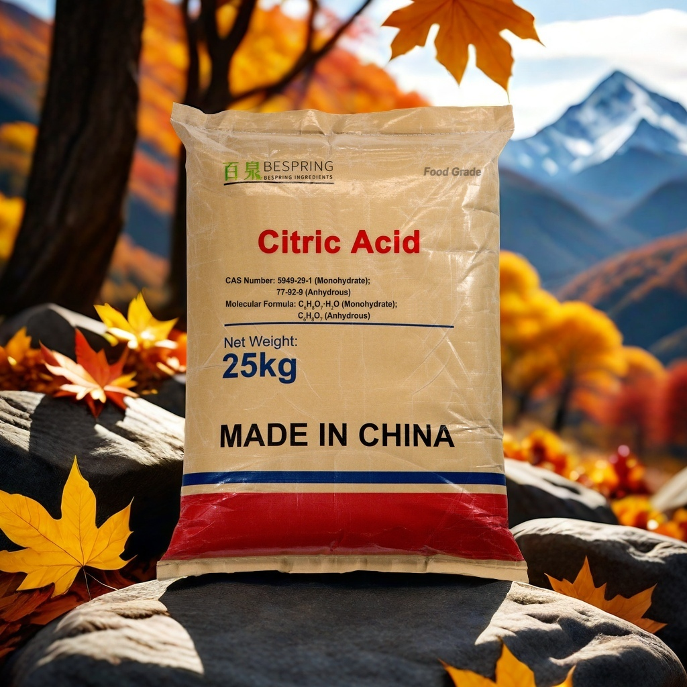
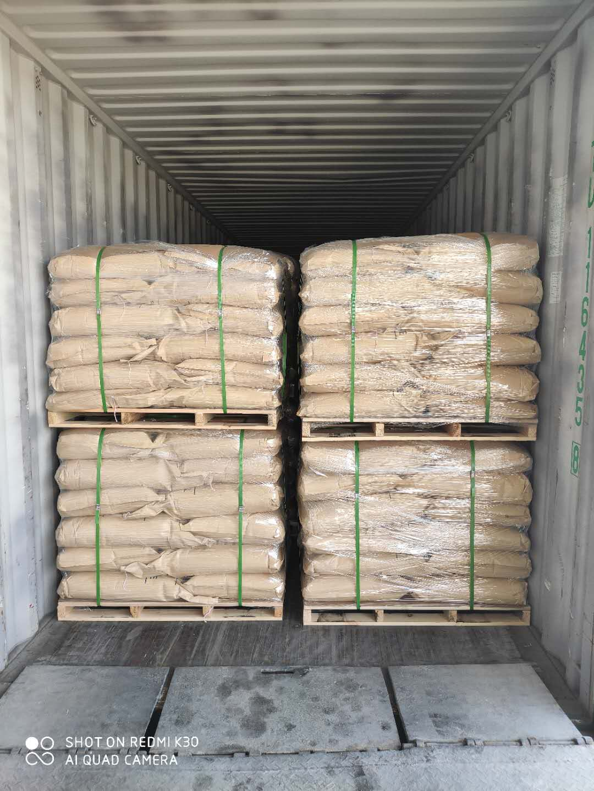

Indique la forma, cantidad, destino y norma requerida para agilizar la respuesta técnica.

Fotografía de referencia; confirme el producto y el envase del lote ofrecido.
Documentación del loteCOA y fichas de producto previa solicitud
Embalaje de exportaciónAcuerde saco y paletización
InspecciónPuede acordarse una inspección independiente
Coordinación internacionalRequisitos del mercado de destino
Descripción del producto
¿Qué es el ácido cítrico de grado alimentario?
El ácido cítrico de grado alimentario es un ácido orgánico soluble en agua que se utiliza para regular la acidez y ajustar el sabor de alimentos y bebidas. Al comprarlo, conviene precisar la forma requerida, la norma aplicable, la granulometría, el envase y los documentos exigidos en el mercado de destino.
Su utilidad es práctica: aporta acidez reproducible y permite ajustar el pH en formulaciones líquidas y secas. El equipo de formulación y cumplimiento del comprador debe verificar su idoneidad y dosificación en el producto final.
Elegir la forma adecuada
Ácido cítrico anhidro y monohidrato
Ambas formas cumplen una función similar, pero difieren en su agua de cristalización y en algunos aspectos de manejo. La selección debe basarse en pruebas de formulación y en la especificación técnica acordada.
Forma 01
Ácido cítrico anhidro
No contiene agua de cristalización. Suele considerarse para mezclas secas, bebidas en polvo y procesos en los que interesa limitar el aporte de humedad.
Apto para evaluar en muchas formulaciones de baja humedad
Puede suministrarse con distintas granulometrías
Indique el tamaño de partícula cuando sea relevante
Forma 02
Ácido cítrico monohidrato
Contiene una molécula de agua en su estructura cristalina. La elección depende de la disolución, el proceso y los requisitos comerciales de cada aplicación alimentaria.
Forma habitual en el procesado de alimentos
Considere la forma al hacer cálculos de formulación
Confirme la especificación y las condiciones de almacenamiento
Usos en alimentos y bebidas
Aplicaciones de Ácido cítrico de grado alimentario (E330)
La idoneidad depende de la receta, el proceso, la normativa local y los objetivos de pH y sabor del producto terminado.
Bebidas
Ajuste de acidez y perfil ácido en refrescos, bebidas de fruta, preparados en polvo y concentrados.
Confitería
Equilibrio entre acidez y sabor en caramelos, gominolas, gelatinas y recubrimientos en polvo.
Conservas y salsas
Ajuste de pH y sabor en mermeladas, preparados de fruta, salsas y determinados productos en conserva.
Lácteos y postres congelados
Acidificación controlada y equilibrio de sabor en formulaciones lácteas, fermentadas o congeladas compatibles.
Panificación
Componente ácido de determinados sistemas de leudado y ajuste de sabor en rellenos y productos finales.
Mezclas secas
Acidez uniforme en condimentos, mezclas instantáneas, bebidas en polvo y preparados de ingredientes.
Información técnica
Especificación de compra de referencia
Este resumen sirve para una evaluación inicial; no es un certificado de análisis. Los límites exactos dependen de la forma, el grado y la norma acordada. Solicite la especificación vigente antes de comprar.
Ácido cítrico alimentario: datos de referencia
Parámetro
Información de referencia
Nota para el comprador
Formas
Anhidro / monohidrato
Indique la forma requerida en su consulta
Ensayo
≥ 99,5 % (referencia)
Confirme el método y el intervalo contractual
Aspecto
Polvo cristalino blanco o gránulos
La granulometría disponible puede variar
Denominación como aditivo
E330
Compruebe los requisitos del mercado de destino
Envase
Saco de 25 kg; otras opciones por acuerdo
Confirme bolsa interior, paletización y etiquetado
Documentos
COA / TDS / SDS previa solicitud
Indique grado y país de destino
Importante: La autorización, la dosis permitida y el etiquetado dependen de la aplicación y el mercado de destino. El comprador debe completar su propia revisión normativa y de formulación.
Verificación de identidad en fuentes primarias
La monografía de FAO/OMS JECFA identifica el ácido cítrico como INS 330: CAS 77-92-9 para la forma anhidra y CAS 5949-29-1 para el monohidrato. Indica un ensayo del 99,5–100,5 % sobre base anhidra y recoge funciones como acidulante, secuestrante, sinergista antioxidante y aromatizante. El registro de sustancias alimentarias de la FDA de EE. UU. también recoge el CAS 77-92-9. Estas fuentes ayudan a verificar la identidad y los criterios de referencia; no sustituyen la especificación de suministro acordada ni la revisión del mercado de destino.
La forma, la norma y la base analítica determinan si dos ofertas aparentemente similares pueden compararse.
01
Forma e identidad
Indique anhidro o monohidrato, el CAS correspondiente, la denominación E330/INS 330 y la aplicación prevista.
02
Norma y métodos de ensayo
Defina la norma alimentaria requerida y alinee base de ensayo, agua, impurezas, granulometría, muestreo y métodos analíticos.
03
Ajuste al proceso
Comparta el pH objetivo, el perfil sensorial, si el proceso es seco o líquido, las necesidades de disolución y cualquier limitación por humedad.
04
Documentos y entrega
Confirme la especificación vigente, el COA del lote y los documentos aplicables, además de saco, palés, cantidad y destino.
Comparación comercial: No compare solo el precio de «ácido cítrico». Primero iguale forma, base de ensayo, norma, granulometría, envase, documentos y cantidad entregada.
Envase y logística de exportación
Referencia de embalaje y carga en contenedor
El envase, los palés y el peso de carga se confirman según la forma de ácido cítrico seleccionada, el destino y el plan de envío aprobado.

Sacos paletizados en un contenedor; imagen de referencia, sin identificación visible del producto.
Confirme el envío antes de la carga
El envase de referencia es un saco de 25 kg. Al revisar el pedido, confirme la forma de ácido cítrico, la bolsa interior, la paletización, el etiquetado, el puerto de destino y la fecha prevista.
Saco y bolsa interiorAdecue el envase a la forma seleccionada y a los requisitos del destino.
PaletizaciónConfirme dimensiones, envoltura y disposición de carga antes del envío.
Plan del contenedorEl peso final y la disposición dependen de la ruta, el contenedor y el plan de envío aprobado.
Almacenamiento y manipulación
Proteja la calidad después de la entrega
Almacene correctamenteGuarde el producto en un lugar fresco, seco y bien ventilado.
Mantenga el envase cerradoProteja el material abierto de la humedad y la contaminación.
Consulte la SDSAplique controles de trabajo y protección adecuados a la tarea.
Recursos para elegir ingredientes
Compare acidulantes, citratos y aplicaciones
Después de confirmar la identidad del producto, examine ingredientes relacionados y sus requisitos de formulación.
¿Para qué se utiliza el ácido cítrico alimentario?
Se utiliza habitualmente para ajustar la acidez, aportar un sabor ácido definido y equilibrar perfiles de sabor en bebidas, confitería, lácteos, conservas y otros alimentos procesados. La formulación concreta determina su uso.
¿Qué diferencia hay entre la forma anhidra y el monohidrato?
La forma anhidra no contiene agua de cristalización; el monohidrato incorpora una molécula de agua en su estructura cristalina. Elija según la receta, el proceso, el almacenamiento y la especificación requerida.
¿Puedo solicitar una muestra antes de una compra a granel?
Puede consultarse la disponibilidad de muestras para proyectos definidos. Indique forma, aplicación, especificación, destino y cuenta de mensajería para confirmar condiciones de envío.
¿Comparten número CAS la forma anhidra y el monohidrato?
No. JECFA identifica el ácido cítrico anhidro con CAS 77-92-9 y el monohidrato con CAS 5949-29-1. Consigne la forma exacta en especificaciones, documentos y cotizaciones.
¿Puedo pedir COA, TDS o SDS?
Sí. Solicite los documentos aplicables al grado, lote y mercado de destino que evalúa. Compare el COA del lote con la especificación de compra acordada.
¿Qué datos se necesitan para una cotización precisa?
Indique forma, grado o norma, cantidad, envase, país o puerto de destino, aplicación y fecha de entrega prevista. Así se evita comparar ofertas de productos o condiciones diferentes.
¿Se puede organizar una inspección antes del embarque?
La inspección por un tercero puede acordarse antes de confirmar el pedido. Incluya alcance, organismo y formato del informe, pues el plazo y el coste pueden afectar la oferta.
Inicie su consulta de suministro
Solicite una cotización de ácido cítrico
Comparta los datos que influyen en la selección del producto y el coste puesto en destino. Nuestro equipo podrá responder con un grado, los documentos y una propuesta comercial pertinentes.